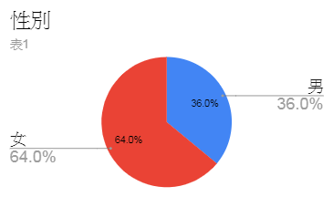
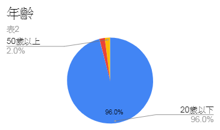
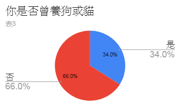
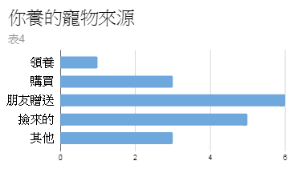
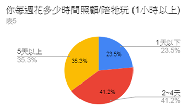
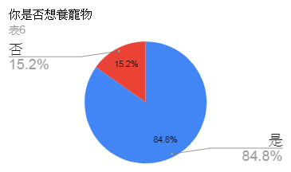
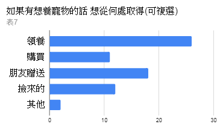
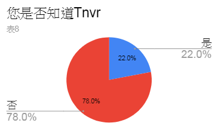
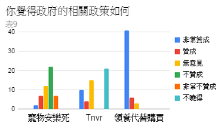

問卷

由表1可得知，在受訪者中，可能女性較男性更加關心動物的問題。
由表2可得知，在受訪人中，年齡層位於20歲以下居多。


由表3可得知，在受訪人中，多數人未曾養育過寵物。
由表4可得知，在受訪人中，由朋友贈送的人數最多，從路邊撿來養育的人居二。


由表5可得知，在受訪人中，較多人花2~4天陪伴寵物。
由表6可得知，在受訪人中，在未養過寵物的區塊中，還是有多數人想養寵物。


由表7可得知，在受訪人中，多數還是會以領養優先。
由表8可得知，在受訪人中，多數人並不知曉TNVR。


由表9可得知，在受訪人中，多數人不贊成寵物安樂死；多數人不曉得TNVR；大多都贊同領養代替購買。